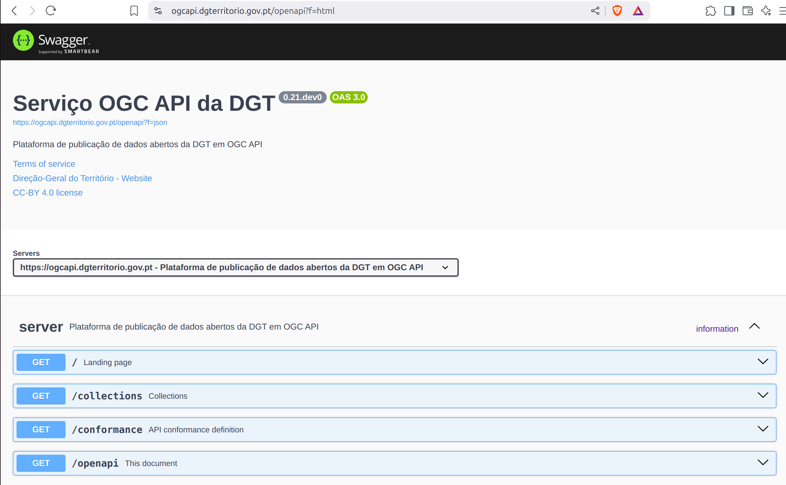
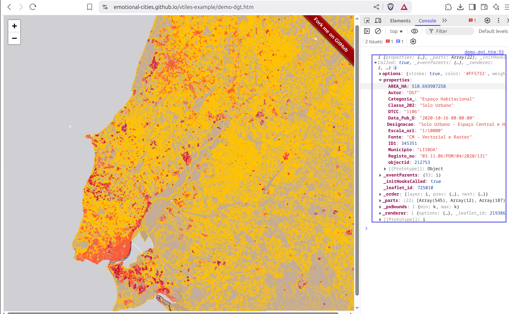

Descrição
Warning
As descrições de funcionalidade dos Standards OGC apresentadas nesta secção cobrem apenas alguns aspectos e não dispensam a leitura completa dos Standards aqui referidos: OGC API - Common, OGC API Features e OGC API - Tiles. Os links para esses documentos podem ser encontrados directamente no texto, ou na secção Referências e Recursos de Aprendizagem
Introdução
A disponibilização e reutilização dos dados abertos, conforme estabelecido na Diretiva (UE) 2019/1024 do Parlamento Europeu e do Conselho, exige a adoção de novos procedimentos nomeadamente a nível da disponibilização e reutilização da informação do sector público.
Os dados geográficos abertos devem ser disponibilizados gratuitamente, em formato legível por máquinas e por meio de Interfaces de Programação de Aplicações (IPA/API). A Open Geospatial Consortium (OGC) tem vindo nos últimos anos a desenvolver novos Serviços de Dados Geográficos (SDG) para a WEB através de API, denominadas de OGC API. Estas API foram concebidas para facilitar a qualquer pessoa a disponibilização e a utilização de dados geográficos na WEB, bem como a integração desses dados com qualquer outro tipo de informação. Estas normas baseiam-se no legado das normas de serviços WEB da OGC (WCS, WMS, WMTS, WFS, WPS, etc.), mas definem API centradas em recursos que tiram partido das práticas modernas de desenvolvimento WEB como REST e JSON, tornando-as compatíveis com uma grande variedade de aplicações e plataformas.
Estas normas promovem a interoperabilidade, a escalabilidade e a segurança, facilitando a integração e a análise de dados geográficos em tempo real.
Assim, a Direção-Geral do Território (DGT) está a criar uma plataforma, que permite disponibilizar os dados geográficos registados no SNIG e com políticas de dados abertas, através de OGC API.
Acesso
A infraestrutura de dados geospaciais OGC API da DGT oferece uma API com múltiplos endpoints que permitem obter dados geospaciais, mas também aceder a metadados sobre o serviço em si e as coleções publicadas. A documentação de todos os endpoints publicados está disponível (de acordo com o Standard) no OpenAPI endpoint:
https://ogcapi.dgterritorio.gov.pt/openapi

Para além da documentação dos endpoints, de acordo com o Standard OGC API - Common - Part 1: Core, a API oferece uma Landing Page (ou página de início) e uma Conformance Declaration (ou declaração de conformidade):
- https://ogcapi.dgterritorio.gov.pt/: Landing Page, ponto de partida para usar a API, com todos os links necessários para aceder a outros recursos.
- https://ogcapi.dgterritorio.gov.pt/conformance: Conformance Declaration, lista de todos os módulos OGC API suportados neste serviço.
De acordo com o candidato a Standard OGC API - Common - Part 2 esta API apresenta também um endpoint de Collections (colecções), onde são apresentadas todas as colecções publicadas por este serviço.
- https://ogcapi.dgterritorio.gov.pt/collections: Collections, lista de colecções publicadas neste serviço.
Quote
"Geospatial resources are typically packaged into sets or collections of related resources. A single API may provide access to a large number of collections. This API-GeoData standard provides a means of organizing these collections and defines operations for the discovery and selection of individual collections." (OGC API - Common - Part 2: Geospatial Data Standard)
Formatos da Resposta
Os Standards OGC API oferecem diferentes formatos através de um mecanismo de negociação de conteúdos. Desta forma, uma API poderá obter uma resposta em formato JSON, enquanto que um browser poderá obter uma resposta em formato HTML. A representação alternativa dos endpoints em formato HTML é apenas uma conveniência e não deve ser considerada um substituto de uma aplicação cliente, que é a forma recomendada de aceder aos endpoints. Na secção Acesso desde o QGIS é apresentado um exemplo de como aceder ao serviço usando uma aplicação cliente (QGIS).
Tip
A pygeoapi apresenta um mecanismo para forçar o formato da resposta, através do parâmetro f. Para obter uma resposta em formato HTML, deve ser usado f=html:
https://ogcapi.dgterritorio.gov.pt/?f=html
Para obter a mesma resposta em formato JSON, deve ser usado f=json:
https://ogcapi.dgterritorio.gov.pt/?f=json
Este padrão é válido para todos os endpoints da OGC API.
Colecções Publicadas
A DGT disponibliza mais de setenta colecções em OGC API.
As colecções "OrtoSat 30 cm - Portugal Continental", "Ortofotos 25 cm e 50 cm - Portugal Continental" e "Mosaico composto por imagens Sentinel-2 de Portugal continental com resolução de 10 m", em versões de cor verdadeira e falsa cor, assim como a "Carta de Ocupação do Solo Conjuntural" e "Modelo do Geóide - GeodPT08 (Continente)", estão publicadas como OGC API - Maps.
Info
OGC API - Maps segue as pegadas do Web Map Service (WMS) da OGC, possibilitando ás aplicações clientes pedir mapas com informação geospacial na web, usando parâmetros específicos (bounding box, crs, etc).
O "Cadastro Predial", "Carta do Regime de Uso do Solo (CRUS)", "Carta de Uso e Ocupação do Solo (COS)", "Carta Administrativa Oficial de Portugal (CAOP)" e as colecções de "Servidão e Restrição de Utilidade Pública (SRUP)" estão publicadas como OGC API - Features e OGC API - Tiles. As tiles disponibilizadas são vetoriais usando o formato Vector Tile da Mapbox.
Info
OGC API - Features permite obter dados vetoriais na web, independentemente da forma como estes estão armazenados (ficheiro, base de dados SQL, base de dados NoSQL).
Info
OGC API - Tiles pode ser considerado um upgrade ao Standard OGC Web Map Tile Service (WMTS), permitindo criar mapas interactivos na web, que funcionam de uma forma eficiente.
A imagem abaixo mostra um exemplo de uma aplicação de web que produz um mapa interactivo do tema "crus", a partir de um endpoint de OGC AP - Tiles. O código completo pode ser consultado aqui.

As colecções "Sistema Nacional de Informação Geográfica (SNIG)" e "Portal de Informação Territorial (PoInT)" estão publicadas como OGC API - Records.
Info
OGC API - Records permite a descoberta e acesso a metadados sobre recursos geospaciais.
De acordo com OGC API - Common - Part 2 o endpoint de collection (colecção) contém toda a informação necessária sobre essa colecção, incluindo os links para aceder aos dados e metadados. Por exemplo, para obter os metadados de colecção da colecção crus_abrantes:
https://ogcapi.dgterritorio.gov.pt/collections/crus_abrantes
A partir de aqui, é possível obter os dados em formato OGC API - Features, ou navegar até ao endpoint de tiles:
- https://ogcapi.dgterritorio.gov.pt/collections/crus_abrantes/items
- https://ogcapi.dgterritorio.gov.pt/collections/crus_abrantes/tiles
Tip
OGC API - Features suporta um parametro de paging, que permite receber um número pre definido de items na resposta. Por defeito, o servidor está configurado para devolver respostas com 100 items. Este limite pode ser forçado através do parâmetro limit, até atingir o valor máximo definido no servidor. Por exemplo, para pedir uma resposta que devolva o máximo de 200 items:
https://ogcapi.dgterritorio.gov.pt/collections/crus_abrantes/items?limit=200
CRS Suportados
Este serviço publica os dados vetoriais em cinco Coordinate Reference Systems (CRS), ou Sistemas de Referência de Coordenadas:
- http://www.opengis.net/def/crs/OGC/1.3/CRS84
- http://www.opengis.net/def/crs/EPSG/0/4326
- http://www.opengis.net/def/crs/EPSG/0/3857
- http://www.opengis.net/def/crs/EPSG/0/4258
- http://www.opengis.net/def/crs/EPSG/0/3763
De acordo com OGC API - Common - Part 2 esta informação é apresentada no endpoint collection de cada colecção.